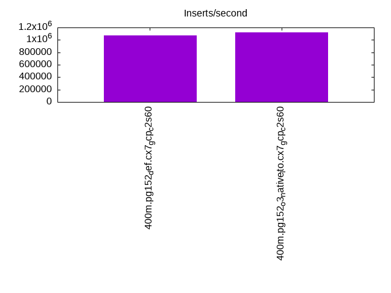
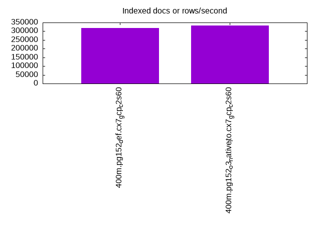
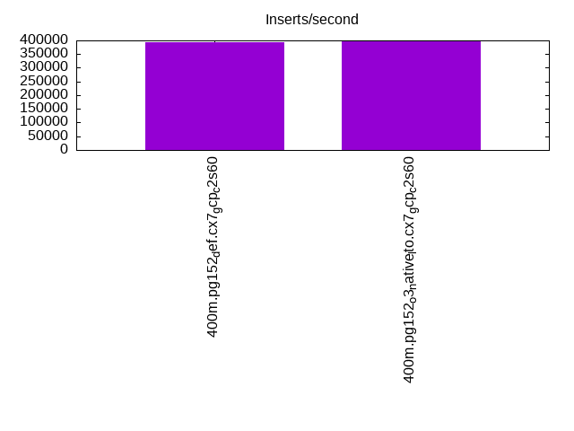
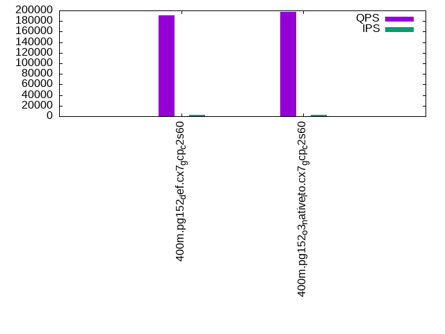
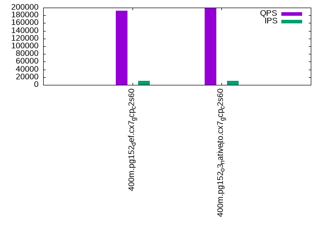
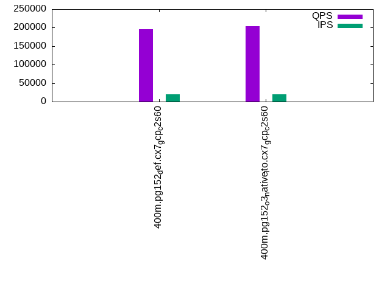

This is a report for the insert benchmark with 400M docs and 20 client(s). It is generated by scripts (bash, awk, sed) and Tufte might not be impressed. An overview of the insert benchmark is here and a short update is here. Below, by DBMS, I mean DBMS+version.config. An example is my8020.c10b40 where my means MySQL, 8020 is version 8.0.20 and c10b40 is the name for the configuration file.
The test server is a c2-standard-60 from GCP with 30 cores, hyperthreading disabled, 240G RAM and 3T from XFS and SW RAID 0 striped over 8 local NVMe drives. The benchmark was run with 20 clients and there were 1 or 2 connections per client (1 for queries, 1 for inserts). The benchmark loads 400M rows without secondary indexes, creates secondary indexes, loads another 400M rows then does 3 read+write tests for one hour each that do queries as fast as possible with 100, 500 and then 1000 writes/second/client concurrent with the queries. Each read-write test runs for 1800 seconds. The test was configured to use one table. The database is cached by the storage engine and the only IO is for writes. Clients and the DBMS share one server. The per-database configs are in the per-database subdirectories here.
The tested DBMS are:
The numbers are inserts/s for l.i0 and l.i1, indexed docs (or rows) /s for l.x and queries/s for q*.2. The values are the average rate over the entire test for inserts (IPS) and queries (QPS). The range of values for IPS and QPS is split into 3 parts: bottom 25%, middle 50%, top 25%. Values in the bottom 25% have a red background, values in the top 25% have a green background and values in the middle have no color. A gray background is used for values that can be ignored because the DBMS did not sustain the target insert rate. Red backgrounds are not used when the minimum value is within 80% of the max value.
| dbms | l.i0 | l.x | l.i1 | q100.1 | q500.1 | q1000.1 |
|---|---|---|---|---|---|---|
| 400m.pg152_def.cx7_gcp_c2s60 | 1075269 | 319059 | 393314 | 190651 | 191907 | 195727 |
| 400m.pg152_o3_native_lto.cx7_gcp_c2s60 | 1117318 | 331483 | 396040 | 197851 | 198846 | 203524 |
This lists the average rate of inserts/s for the tests that do inserts concurrent with queries. For such tests the query rate is listed in the table above. The read+write tests are setup so that the insert rate should match the target rate every second. Cells that are not at least 95% of the target have a red background to indicate a failure to satisfy the target.
| dbms | q100.1 | q500.1 | q1000.1 |
|---|---|---|---|
| pg152_def.cx7_gcp_c2s60 | 1976 | 9885 | 19769 |
| pg152_o3_native_lto.cx7_gcp_c2s60 | 1976 | 9885 | 19769 |
| target | 2000 | 10000 | 20000 |
l.i0: load without secondary indexes. Graphs for performance per 1-second interval are here.
Average throughput:
Insert response time histogram: each cell has the percentage of responses that take <= the time in the header and max is the max response time in seconds. For the max column values in the top 25% of the range have a red background and in the bottom 25% of the range have a green background. The red background is not used when the min value is within 80% of the max value.
| dbms | 256us | 1ms | 4ms | 16ms | 64ms | 256ms | 1s | 4s | 16s | gt | max |
|---|---|---|---|---|---|---|---|---|---|---|---|
| pg152_def.cx7_gcp_c2s60 | 19.214 | 77.426 | 3.300 | 0.022 | 0.021 | 0.017 | 0.667 | ||||
| pg152_o3_native_lto.cx7_gcp_c2s60 | 27.447 | 69.365 | 3.137 | 0.015 | 0.024 | 0.012 | 0.001 | 1.151 |
Performance metrics for the DBMS listed above. Some are normalized by throughput, others are not. Legend for results is here.
ips qps rps rmbps wps wmbps rpq rkbpq wpi wkbpi csps cpups cspq cpupq dbgb1 dbgb2 rss maxop p50 p99 tag 1075269 0 0 0.0 1703.9 418.0 0.000 0.000 0.002 0.398 306044 57.6 0.285 16 43.0 116.1 NA 0.667 60234 8790 400m.pg152_def.cx7_gcp_c2s60 1117318 0 0 0.0 1662.9 414.6 0.000 0.000 0.001 0.380 327166 57.3 0.293 15 43.0 113.5 NA 1.151 61733 9190 400m.pg152_o3_native_lto.cx7_gcp_c2s60
l.x: create secondary indexes.
Average throughput:
Performance metrics for the DBMS listed above. Some are normalized by throughput, others are not. Legend for results is here.
ips qps rps rmbps wps wmbps rpq rkbpq wpi wkbpi csps cpups cspq cpupq dbgb1 dbgb2 rss maxop p50 p99 tag 319059 0 1527 15.0 421.2 100.4 0.005 0.048 0.001 0.322 728 3.0 0.002 3 78.3 152.0 0.0 0.027 NA NA 400m.pg152_def.cx7_gcp_c2s60 331483 0 2487 17.2 469.2 108.7 0.008 0.053 0.001 0.336 1395 3.1 0.004 3 78.3 152.7 0.0 0.010 NA NA 400m.pg152_o3_native_lto.cx7_gcp_c2s60
l.i1: continue load after secondary indexes created. Graphs for performance per 1-second interval are here.
Average throughput:
Insert response time histogram: each cell has the percentage of responses that take <= the time in the header and max is the max response time in seconds. For the max column values in the top 25% of the range have a red background and in the bottom 25% of the range have a green background. The red background is not used when the min value is within 80% of the max value.
| dbms | 256us | 1ms | 4ms | 16ms | 64ms | 256ms | 1s | 4s | 16s | gt | max |
|---|---|---|---|---|---|---|---|---|---|---|---|
| pg152_def.cx7_gcp_c2s60 | 94.444 | 4.661 | 0.855 | 0.025 | 0.015 | nonzero | 1.659 | ||||
| pg152_o3_native_lto.cx7_gcp_c2s60 | 94.562 | 4.391 | 1.005 | 0.026 | 0.016 | 0.959 |
Performance metrics for the DBMS listed above. Some are normalized by throughput, others are not. Legend for results is here.
ips qps rps rmbps wps wmbps rpq rkbpq wpi wkbpi csps cpups cspq cpupq dbgb1 dbgb2 rss maxop p50 p99 tag 393314 0 2975 27.4 2531.9 436.4 0.008 0.071 0.006 1.136 288167 54.3 0.733 41 170.2 337.0 NA 1.659 23674 1898 400m.pg152_def.cx7_gcp_c2s60 396040 0 3098 27.8 2399.0 433.7 0.008 0.072 0.006 1.121 282779 52.6 0.714 40 170.2 324.2 NA 0.959 24473 1648 400m.pg152_o3_native_lto.cx7_gcp_c2s60
q100.1: range queries with 100 insert/s per client. Graphs for performance per 1-second interval are here.
Average throughput:
Query response time histogram: each cell has the percentage of responses that take <= the time in the header and max is the max response time in seconds. For max values in the top 25% of the range have a red background and in the bottom 25% of the range have a green background. The red background is not used when the min value is within 80% of the max value.
| dbms | 256us | 1ms | 4ms | 16ms | 64ms | 256ms | 1s | 4s | 16s | gt | max |
|---|---|---|---|---|---|---|---|---|---|---|---|
| pg152_def.cx7_gcp_c2s60 | 99.973 | 0.021 | 0.006 | 0.001 | nonzero | 0.027 | |||||
| pg152_o3_native_lto.cx7_gcp_c2s60 | 99.976 | 0.017 | 0.006 | 0.001 | nonzero | 0.024 |
Insert response time histogram: each cell has the percentage of responses that take <= the time in the header and max is the max response time in seconds. For max values in the top 25% of the range have a red background and in the bottom 25% of the range have a green background. The red background is not used when the min value is within 80% of the max value.
| dbms | 256us | 1ms | 4ms | 16ms | 64ms | 256ms | 1s | 4s | 16s | gt | max |
|---|---|---|---|---|---|---|---|---|---|---|---|
| pg152_def.cx7_gcp_c2s60 | 98.658 | 1.200 | 0.142 | 0.034 | |||||||
| pg152_o3_native_lto.cx7_gcp_c2s60 | 98.579 | 1.211 | 0.210 | 0.032 |
Performance metrics for the DBMS listed above. Some are normalized by throughput, others are not. Legend for results is here.
ips qps rps rmbps wps wmbps rpq rkbpq wpi wkbpi csps cpups cspq cpupq dbgb1 dbgb2 rss maxop p50 p99 tag 1976 190651 0 0.0 2478.5 71.6 0.000 0.000 1.254 37.116 680740 62.8 3.571 99 171.1 309.3 0.0 0.027 9434 9114 400m.pg152_def.cx7_gcp_c2s60 1976 197851 0 0.0 2538.2 69.5 0.000 0.000 1.285 36.005 705631 62.7 3.566 95 171.1 303.2 0.0 0.024 9813 9494 400m.pg152_o3_native_lto.cx7_gcp_c2s60
q500.1: range queries with 500 insert/s per client. Graphs for performance per 1-second interval are here.
Average throughput:
Query response time histogram: each cell has the percentage of responses that take <= the time in the header and max is the max response time in seconds. For max values in the top 25% of the range have a red background and in the bottom 25% of the range have a green background. The red background is not used when the min value is within 80% of the max value.
| dbms | 256us | 1ms | 4ms | 16ms | 64ms | 256ms | 1s | 4s | 16s | gt | max |
|---|---|---|---|---|---|---|---|---|---|---|---|
| pg152_def.cx7_gcp_c2s60 | 99.913 | 0.056 | 0.027 | 0.003 | nonzero | 0.029 | |||||
| pg152_o3_native_lto.cx7_gcp_c2s60 | 99.919 | 0.052 | 0.026 | 0.003 | nonzero | 0.031 |
Insert response time histogram: each cell has the percentage of responses that take <= the time in the header and max is the max response time in seconds. For max values in the top 25% of the range have a red background and in the bottom 25% of the range have a green background. The red background is not used when the min value is within 80% of the max value.
| dbms | 256us | 1ms | 4ms | 16ms | 64ms | 256ms | 1s | 4s | 16s | gt | max |
|---|---|---|---|---|---|---|---|---|---|---|---|
| pg152_def.cx7_gcp_c2s60 | 52.465 | 27.302 | 19.929 | 0.304 | 0.173 | ||||||
| pg152_o3_native_lto.cx7_gcp_c2s60 | 52.730 | 27.138 | 19.853 | 0.279 | 0.174 |
Performance metrics for the DBMS listed above. Some are normalized by throughput, others are not. Legend for results is here.
ips qps rps rmbps wps wmbps rpq rkbpq wpi wkbpi csps cpups cspq cpupq dbgb1 dbgb2 rss maxop p50 p99 tag 9885 191907 0 0.0 4634.8 145.5 0.000 0.000 0.469 15.075 672579 64.0 3.505 100 176.0 262.7 0.0 0.029 9485 9062 400m.pg152_def.cx7_gcp_c2s60 9885 198846 0 0.0 4572.0 143.9 0.000 0.000 0.463 14.903 696337 63.5 3.502 96 176.0 259.8 0.0 0.031 9913 9478 400m.pg152_o3_native_lto.cx7_gcp_c2s60
q1000.1: range queries with 1000 insert/s per client. Graphs for performance per 1-second interval are here.
Average throughput:
Query response time histogram: each cell has the percentage of responses that take <= the time in the header and max is the max response time in seconds. For max values in the top 25% of the range have a red background and in the bottom 25% of the range have a green background. The red background is not used when the min value is within 80% of the max value.
| dbms | 256us | 1ms | 4ms | 16ms | 64ms | 256ms | 1s | 4s | 16s | gt | max |
|---|---|---|---|---|---|---|---|---|---|---|---|
| pg152_def.cx7_gcp_c2s60 | 99.859 | 0.099 | 0.038 | 0.004 | nonzero | 0.045 | |||||
| pg152_o3_native_lto.cx7_gcp_c2s60 | 99.867 | 0.092 | 0.037 | 0.004 | nonzero | 0.041 |
Insert response time histogram: each cell has the percentage of responses that take <= the time in the header and max is the max response time in seconds. For max values in the top 25% of the range have a red background and in the bottom 25% of the range have a green background. The red background is not used when the min value is within 80% of the max value.
| dbms | 256us | 1ms | 4ms | 16ms | 64ms | 256ms | 1s | 4s | 16s | gt | max |
|---|---|---|---|---|---|---|---|---|---|---|---|
| pg152_def.cx7_gcp_c2s60 | 59.798 | 27.268 | 12.682 | 0.252 | 0.175 | ||||||
| pg152_o3_native_lto.cx7_gcp_c2s60 | 60.347 | 26.725 | 12.675 | 0.252 | 0.174 |
Performance metrics for the DBMS listed above. Some are normalized by throughput, others are not. Legend for results is here.
ips qps rps rmbps wps wmbps rpq rkbpq wpi wkbpi csps cpups cspq cpupq dbgb1 dbgb2 rss maxop p50 p99 tag 19769 195727 0 0.0 4738.9 205.0 0.000 0.000 0.240 10.621 661521 65.2 3.380 100 189.4 270.0 0.0 0.045 9733 9126 400m.pg152_def.cx7_gcp_c2s60 19769 203524 0 0.0 4752.0 204.9 0.000 0.000 0.240 10.613 687289 65.0 3.377 96 189.4 268.6 0.0 0.041 10121 9382 400m.pg152_o3_native_lto.cx7_gcp_c2s60
l.i0: load without secondary indexes
Performance metrics for all DBMS, not just the ones listed above. Some are normalized by throughput, others are not. Legend for results is here.
ips qps rps rmbps wps wmbps rpq rkbpq wpi wkbpi csps cpups cspq cpupq dbgb1 dbgb2 rss maxop p50 p99 tag 1075269 0 0 0.0 1703.9 418.0 0.000 0.000 0.002 0.398 306044 57.6 0.285 16 43.0 116.1 NA 0.667 60234 8790 400m.pg152_def.cx7_gcp_c2s60 1117318 0 0 0.0 1662.9 414.6 0.000 0.000 0.001 0.380 327166 57.3 0.293 15 43.0 113.5 NA 1.151 61733 9190 400m.pg152_o3_native_lto.cx7_gcp_c2s60
l.x: create secondary indexes
Performance metrics for all DBMS, not just the ones listed above. Some are normalized by throughput, others are not. Legend for results is here.
ips qps rps rmbps wps wmbps rpq rkbpq wpi wkbpi csps cpups cspq cpupq dbgb1 dbgb2 rss maxop p50 p99 tag 319059 0 1527 15.0 421.2 100.4 0.005 0.048 0.001 0.322 728 3.0 0.002 3 78.3 152.0 0.0 0.027 NA NA 400m.pg152_def.cx7_gcp_c2s60 331483 0 2487 17.2 469.2 108.7 0.008 0.053 0.001 0.336 1395 3.1 0.004 3 78.3 152.7 0.0 0.010 NA NA 400m.pg152_o3_native_lto.cx7_gcp_c2s60
l.i1: continue load after secondary indexes created
Performance metrics for all DBMS, not just the ones listed above. Some are normalized by throughput, others are not. Legend for results is here.
ips qps rps rmbps wps wmbps rpq rkbpq wpi wkbpi csps cpups cspq cpupq dbgb1 dbgb2 rss maxop p50 p99 tag 393314 0 2975 27.4 2531.9 436.4 0.008 0.071 0.006 1.136 288167 54.3 0.733 41 170.2 337.0 NA 1.659 23674 1898 400m.pg152_def.cx7_gcp_c2s60 396040 0 3098 27.8 2399.0 433.7 0.008 0.072 0.006 1.121 282779 52.6 0.714 40 170.2 324.2 NA 0.959 24473 1648 400m.pg152_o3_native_lto.cx7_gcp_c2s60
q100.1: range queries with 100 insert/s per client
Performance metrics for all DBMS, not just the ones listed above. Some are normalized by throughput, others are not. Legend for results is here.
ips qps rps rmbps wps wmbps rpq rkbpq wpi wkbpi csps cpups cspq cpupq dbgb1 dbgb2 rss maxop p50 p99 tag 1976 190651 0 0.0 2478.5 71.6 0.000 0.000 1.254 37.116 680740 62.8 3.571 99 171.1 309.3 0.0 0.027 9434 9114 400m.pg152_def.cx7_gcp_c2s60 1976 197851 0 0.0 2538.2 69.5 0.000 0.000 1.285 36.005 705631 62.7 3.566 95 171.1 303.2 0.0 0.024 9813 9494 400m.pg152_o3_native_lto.cx7_gcp_c2s60
q500.1: range queries with 500 insert/s per client
Performance metrics for all DBMS, not just the ones listed above. Some are normalized by throughput, others are not. Legend for results is here.
ips qps rps rmbps wps wmbps rpq rkbpq wpi wkbpi csps cpups cspq cpupq dbgb1 dbgb2 rss maxop p50 p99 tag 9885 191907 0 0.0 4634.8 145.5 0.000 0.000 0.469 15.075 672579 64.0 3.505 100 176.0 262.7 0.0 0.029 9485 9062 400m.pg152_def.cx7_gcp_c2s60 9885 198846 0 0.0 4572.0 143.9 0.000 0.000 0.463 14.903 696337 63.5 3.502 96 176.0 259.8 0.0 0.031 9913 9478 400m.pg152_o3_native_lto.cx7_gcp_c2s60
q1000.1: range queries with 1000 insert/s per client
Performance metrics for all DBMS, not just the ones listed above. Some are normalized by throughput, others are not. Legend for results is here.
ips qps rps rmbps wps wmbps rpq rkbpq wpi wkbpi csps cpups cspq cpupq dbgb1 dbgb2 rss maxop p50 p99 tag 19769 195727 0 0.0 4738.9 205.0 0.000 0.000 0.240 10.621 661521 65.2 3.380 100 189.4 270.0 0.0 0.045 9733 9126 400m.pg152_def.cx7_gcp_c2s60 19769 203524 0 0.0 4752.0 204.9 0.000 0.000 0.240 10.613 687289 65.0 3.377 96 189.4 268.6 0.0 0.041 10121 9382 400m.pg152_o3_native_lto.cx7_gcp_c2s60
Insert response time histogram
256us 1ms 4ms 16ms 64ms 256ms 1s 4s 16s gt max tag 0.000 19.214 77.426 3.300 0.022 0.021 0.017 0.000 0.000 0.000 0.667 pg152_def.cx7_gcp_c2s60 0.000 27.447 69.365 3.137 0.015 0.024 0.012 0.001 0.000 0.000 1.151 pg152_o3_native_lto.cx7_gcp_c2s60
TODO - determine whether there is data for create index response time
Insert response time histogram
256us 1ms 4ms 16ms 64ms 256ms 1s 4s 16s gt max tag 0.000 0.000 94.444 4.661 0.855 0.025 0.015 nonzero 0.000 0.000 1.659 pg152_def.cx7_gcp_c2s60 0.000 0.000 94.562 4.391 1.005 0.026 0.016 0.000 0.000 0.000 0.959 pg152_o3_native_lto.cx7_gcp_c2s60
Query response time histogram
256us 1ms 4ms 16ms 64ms 256ms 1s 4s 16s gt max tag 99.973 0.021 0.006 0.001 nonzero 0.000 0.000 0.000 0.000 0.000 0.027 pg152_def.cx7_gcp_c2s60 99.976 0.017 0.006 0.001 nonzero 0.000 0.000 0.000 0.000 0.000 0.024 pg152_o3_native_lto.cx7_gcp_c2s60
Insert response time histogram
256us 1ms 4ms 16ms 64ms 256ms 1s 4s 16s gt max tag 0.000 0.000 98.658 1.200 0.142 0.000 0.000 0.000 0.000 0.000 0.034 pg152_def.cx7_gcp_c2s60 0.000 0.000 98.579 1.211 0.210 0.000 0.000 0.000 0.000 0.000 0.032 pg152_o3_native_lto.cx7_gcp_c2s60
Query response time histogram
256us 1ms 4ms 16ms 64ms 256ms 1s 4s 16s gt max tag 99.913 0.056 0.027 0.003 nonzero 0.000 0.000 0.000 0.000 0.000 0.029 pg152_def.cx7_gcp_c2s60 99.919 0.052 0.026 0.003 nonzero 0.000 0.000 0.000 0.000 0.000 0.031 pg152_o3_native_lto.cx7_gcp_c2s60
Insert response time histogram
256us 1ms 4ms 16ms 64ms 256ms 1s 4s 16s gt max tag 0.000 0.000 52.465 27.302 19.929 0.304 0.000 0.000 0.000 0.000 0.173 pg152_def.cx7_gcp_c2s60 0.000 0.000 52.730 27.138 19.853 0.279 0.000 0.000 0.000 0.000 0.174 pg152_o3_native_lto.cx7_gcp_c2s60
Query response time histogram
256us 1ms 4ms 16ms 64ms 256ms 1s 4s 16s gt max tag 99.859 0.099 0.038 0.004 nonzero 0.000 0.000 0.000 0.000 0.000 0.045 pg152_def.cx7_gcp_c2s60 99.867 0.092 0.037 0.004 nonzero 0.000 0.000 0.000 0.000 0.000 0.041 pg152_o3_native_lto.cx7_gcp_c2s60
Insert response time histogram
256us 1ms 4ms 16ms 64ms 256ms 1s 4s 16s gt max tag 0.000 0.000 59.798 27.268 12.682 0.252 0.000 0.000 0.000 0.000 0.175 pg152_def.cx7_gcp_c2s60 0.000 0.000 60.347 26.725 12.675 0.252 0.000 0.000 0.000 0.000 0.174 pg152_o3_native_lto.cx7_gcp_c2s60